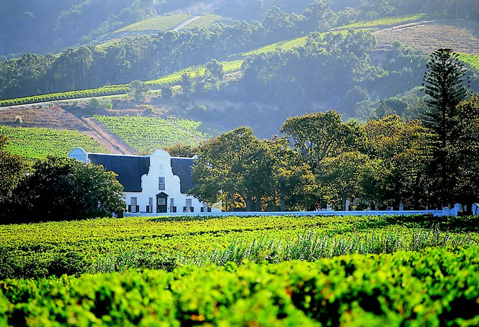

Our Tour Offerings
Nature Tours
Explore Cape Town's vibrant history and diverse cultures with our carefully curated cultural tours. Discover hidden gems in local neighborhoods, visit iconic museums, and engage with the rich traditions of the Cape Malay, Xhosa, and Afrikaans communities. Highlights include visits to District Six, the Bo-Kaap neighborhood, and Robben Island.
- Duration: 4-6 hours
- Includes: Entry fees to museums, lunch at a local restaurant, and transport.
- Ideal for: History enthusiasts, cultural explorers, and first-time visitors.
Adventure Tours

For those seeking thrills, our adventure tours offer an unforgettable experience. Whether you prefer hiking up Table Mountain, paragliding over the city, or surfing in the Atlantic Ocean, our expert guides ensure a safe and exhilarating adventure. Experience Cape Town from unique perspectives, with routes designed for all fitness levels.
- Duration: Full day or half-day options
- Includes: Safety gear, expert guides, transport, and refreshments.
- Ideal for: Adventure seekers, fitness enthusiasts, and outdoor lovers.
Wine Tours
Embark on a journey through the renowned wine estates of the Western Cape. Our wine tours offer a curated selection of wineries, where you can sample award-winning wines while soaking in the breathtaking landscapes. From Stellenbosch to Franschhoek, learn about the art of winemaking and indulge in gourmet pairings.
- Duration: 6-8 hours
- Includes: Wine tastings, cellar tours, and a gourmet lunch.
- Ideal for: Wine enthusiasts, couples, and foodies.
Pricing Information
Our tours are designed to offer exceptional value while delivering personalized experiences. Below are starting prices:
- Cultural Tours: R500 per person
- Adventure Tours: R800 per person
- Wine Tours: R1,200 per person
Group discounts and family packages are available. Contact us for detailed pricing and to customize your tour according to your preferences.
Special Offers
We offer seasonal discounts and special packages. Currently, you can enjoy a 10% discount on all tours booked in advance during the off-season (April - September). Additionally, book a wine tour and get a complimentary wine bottle from one of our partner estates!
Booking Information
To book a tour, please visit our Contact page or reach out to us via phone or email. We recommend booking at least a week in advance to ensure availability, especially during peak seasons.